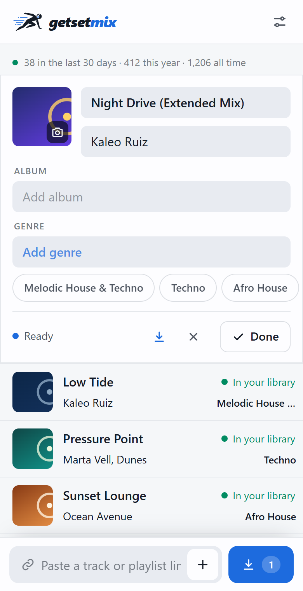
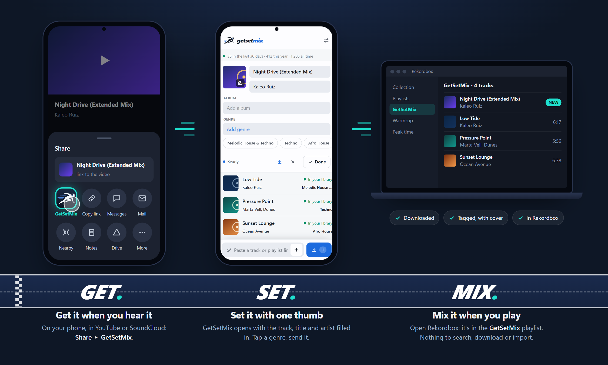

Get a track the moment you hear it: Share ▸ GetSetMix from YouTube or SoundCloud on your phone. Set the tags with one thumb. Mix it when you play: it's already downloaded, tagged and in your Rekordbox collection.

Collecting music happens when you hear it, not at the computer. GetSetMix lets you catch a track right then, from your phone, and have it ready in Rekordbox for your next session.

In YouTube or SoundCloud, tap Share and pick GetSetMix: it's in your phone's share menu like any app (Android). A playlist or a whole set becomes one row per track.
GetSetMix opens with the track. Title and artist are filled in; tap a genre, fix the cover if you like, and send it. Tracks you already own are flagged.
Your server downloads it as MP3 320 or FLAC with tags and artwork, your computer fetches it, and Rekordbox has it in the GetSetMix playlist the next time you open it.
A single small container that does one job well, designed to live in a Kubernetes cluster or on the laptop next to your controller.
Every finished track is appended to your rekordbox.xml and an Inbox playlist. Reload the XML source in Rekordbox and play.
ID3v2.4 or FLAC Vorbis comments: title, artist, album, genre, embedded cover, and the source URL kept in the comment field.
Per-track states, overall progress, cancel anytime. A failed track never halts the batch — retry it on its own.
{artist} - {title} or anything you like, sanitized for every filesystem, with collision-safe suffixes.
Plain manifests with PVCs, probes and Prometheus annotations. Multi-arch images (amd64 + arm64) published to GHCR.
Runs on your network for you alone. Optional token or Basic auth when you expose it, full Prometheus metrics either way.
GetSetMix Setup asks where GetSetMix should run and does the rest, Rekordbox included. Windows and macOS.
Setup installs the app with ffmpeg and Deno and adds a GetSetMix shortcut. It opens in its own window while you use it and puts tracks straight into Rekordbox.
Always on, so you can share tracks from your phone. Paste one command on the server: Setup installs GetSetMix on Docker or Kubernetes with automatic updates, or keeps the one you have.
# Setup shows it, with your code
curl -fsSL http://<pc>:47321/s/<code> \
| sudo sh
Same service, plain files: Docker Compose, Kubernetes manifests, or the standalone app. See the docs.
docker compose \ -f deploy/docker-compose.yml up -d kubectl apply \ -f deploy/k8s/getsetmix.yaml
 getsetmix
getsetmix